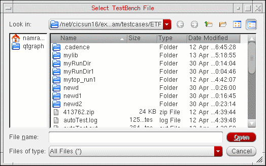

6
Working with the Stimulus
In the NC-Verilog® Integration environment, a test fixture provides the stimulus that drives the simulation. This chapter describes the following:
Simulation Process Flowchart
Specifying the Test Fixture
To run a simulation, your current run directory must contain a test fixture. A test fixture provides stimulus to drive the simulation. In the NC-Verilog Integration Environment, a test fixture includes:
- A testbench file that contains instantiation of the complete design
- A stimulus file that contains preinitialized signal settings that drive a simulation
NC-Verilog Integration Environment saves the paths to these files in the following two variables in the.vlogifrc file:
-
vlogifCurrentTestFixture: Saves the path to the current test fixture file. -
vlogifCurrentStimulus: Saves the path to the current stimulus file.
For information on selecting test fixtures, refer to Selecting Test Fixture Files. You can use either of the following methods to specify a test fixture:
Using Default Test Fixture Files
By default, when you generate netlist for your design for the first time in a new run directory, NC-Verilog creates the following test fixture files:
The test fixture files are automatically created when netlist is generated because the Generate Verilog Test Fixture Template check box on the Netlist Setup form is selected by default.
.vlogifrc file are used.Editing an Existing Test Fixture
If you do not want to use the default test fixture files created during netlist generation, you can select an existing set of files. If required, you can also modify the default or other selected text fixture files. In the NC-Verilog Integration Environment, you can use the Edit Test Fixture form to work with the test fixture files.
To open the Edit Test Fixture form, choose Commands – Edit Test Fixture.
For more information on editing test fixtures, refer to Viewing or Editing Test Fixture Files.
Working with Test Fixture Files
The following sections describe how you can work with the test fixture files:
- Selecting Test Fixture Files
- Resetting the Default Test Fixture Files
- Viewing or Editing Test Fixture Files
- Copying Edit Test Fixture Files
- Deleting Test Fixture Files
Selecting Test Fixture Files
The File Name field in the Testbench and Stimulus sections of the Edit Test Fixture form show the names of the testbench and stimulus files to be used for simulation. If you have generated netlist for your design for the first time in a new run directory, names of the default files are displayed. Otherwise, names of the files used in the last simulation run are displayed.
To select another testbench file:
-
In the Testbench group box, click Browse File (
).
The Select Testbench File form appears.
 - Browse to the directory where the testbench you want to use is saved and select the file.
-
Click Open to use the specified file and close the form.
The selected file becomes the current testbench and its name appears in the File Name field. - Ensure that the Set Selected File As Testbench check box is selected. If this check box is deselected, the testbench file used in the previous simulation run is used.
- Click Apply to apply the change.
vlogifCurrentTestFixture variable in the .vlogifrc file is also updated with the file name you selected in this form.Similarly, in the Stimulus group box, you can select a stimulus file.
Resetting the Default Test Fixture Files
At any time, if you want to select the default test fixture files, click the Defaults button in the Edit Test Fixture form.
The names of the default files, textfixture.template and textfixture.verilog, are displayed in both the File Name fields in the form. In addition, the two check boxes, Set Selected File as Testbench and Set Selected File as Stimulus, are also automatically selected.
Viewing or Editing Test Fixture Files
You can view or edit the contents of the currently selected test fixture files in a text editor. To open the testbench or stimulus file from the Edit Test Fixture form, click Edit/View Selected File().
The selected file opens in the default text editor of Virtuoso. You can make the desired changes in the file and save it. However, before making changes to a file, you might want to save a copy of that file. For more details, see Copying Edit Test Fixture Files.
After you edit a file, click Check Syntax below the file name to check for any syntax errors.
NC-Verilog internally starts ncvlog that checks the test fixture file for any syntax error and displays appropriate messages.
Copying Edit Test Fixture Files
You can copy the current test fixture files to the current or a different run directory. You would typically do this if you want to edit the file for the current simulation, but you want to use it as it is for another simulation run.
To copy the currently selected test fixture file,
-
Click Copy Selected File (
).
The Copy To form appears. - Browse to the directory where you want to save a copy of the current file.
- In the File name field, specify the name with which you want to save a copy of the file.
- Click Save.
A copy of the testbench file is created in the specified directory.
Deleting Test Fixture Files
To delete the selected testbench or the stimulus file, click Delete Selected File ( ) next to the file name. A dialog box appears prompting you to confirm that you want to delete the file. Click Yes
to delete the file. The file is removed from theReturn to top